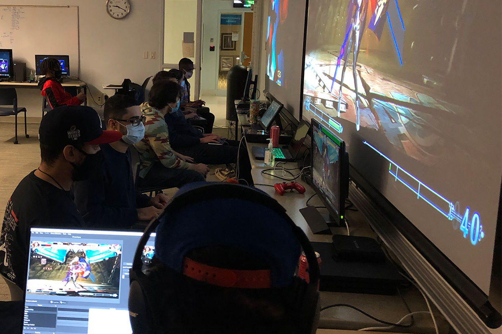
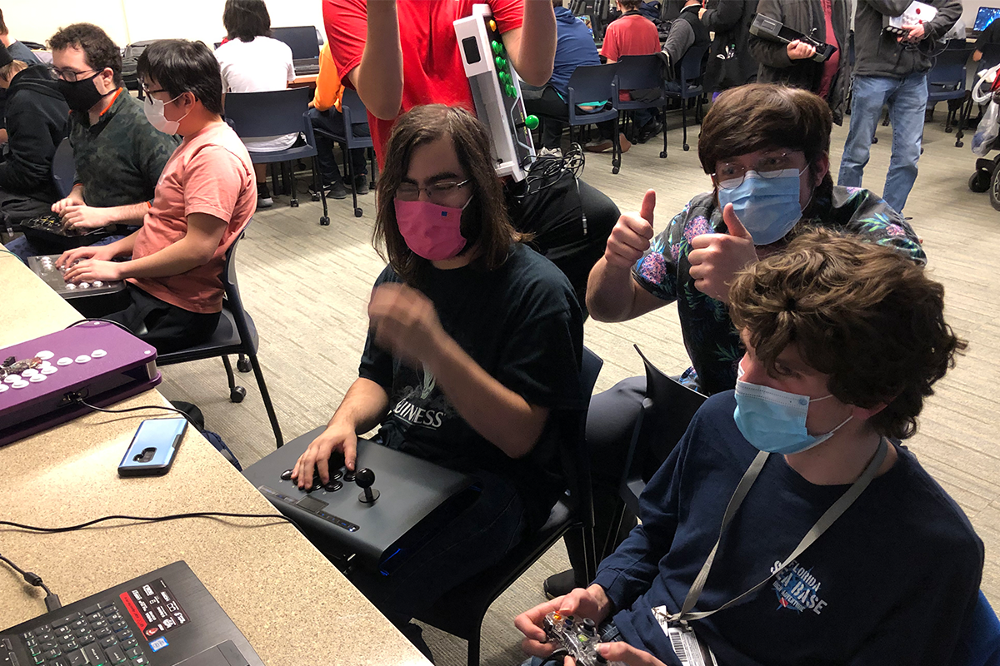
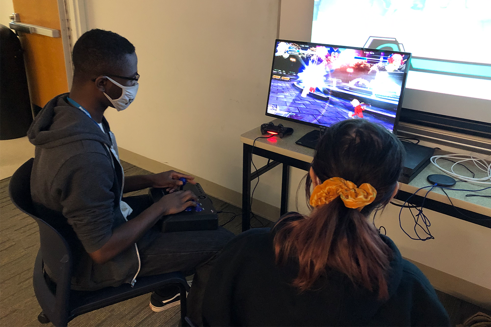
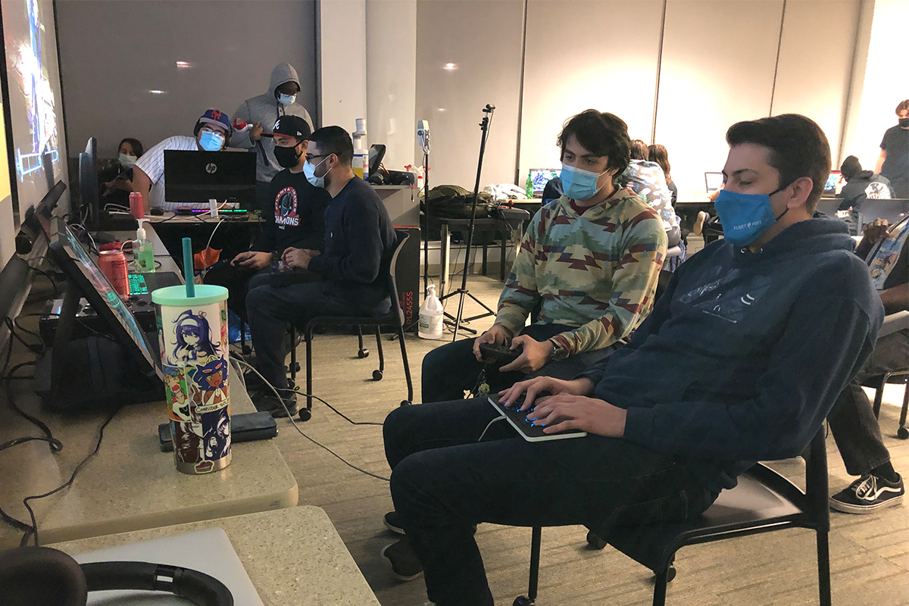

Blazblue: Central Fiction Tournament
Grand finals for our weekly Blazblue ranbats

Casual Awesomeness
Three homies playing Million Arthur: Arcana Blood

Melty Blood Schmix
The life long question: What's the mix? They will soon find out

Club in Full Swing
I tried to take a nice picture and Paul had the audacity to blink

ST Blowup
Two guys chilling when something awesome happened in Super Street Fighter II Turbo